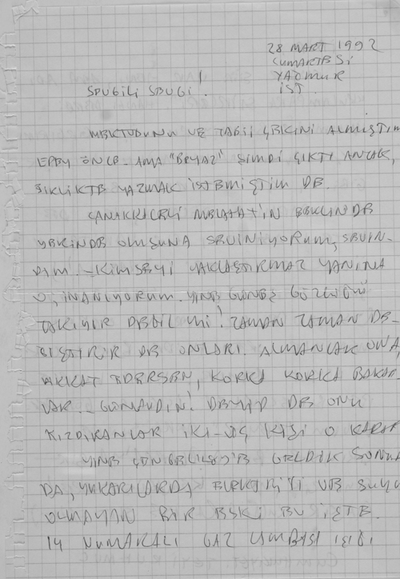
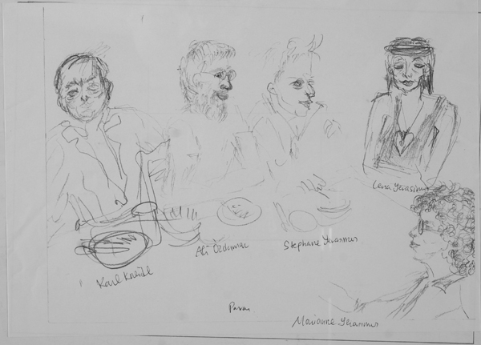

(İlk mektup İstanbul Beylerbeyi’nden gelmiş, Kadıköy’den postaya verilmiş.)
ECE AYHAN ÇAĞLAR
YALIBOYU CAD. 60/9, KERVAN APT.
Beylerbeyi – İstanbul
Frau EMİNE SEVGİ ÖZDAMAR
FÜRSTENWALL 163, 4000 DÜSSELDORF 1, ALMANYA
16. 11. 1991 – İST.
SEVGİLİ SEVGİ
MEKTUBUNU ALMIŞTIM. SULTANTEPE’DEKİ EMLÂKIN KİRALARINI, GÖNDERMEN İŞE YARADI ÇOK! GEÇEN YIL BERLİN’DE ‘ALMAN’ ARİF’İN BANA ALDIĞI EL ÇANTASINI ÇALDIRMIŞTIM ÇÜNKÜ.
SON ÇIKAN ŞARKILARDAN ‘ÇANAKKALELİ MELAHAT’I GÖNDERİYORUM. ELİMDE BÖYLE 3 KİTAP DAHA VAR, HATTA 4 DE DENEBİLİR. AMA BÜTÜN SOSYAL BÜROKRATLAR, BİLİYORSUN ARAM İYİ DEĞİL, SÖZGELİMİ “a dergisi” GRUBUNUN HEMEN HEMEN HEPSİ ÜÇ KÂĞITÇI VE SAHTEKÂR ÇIKTI, BEN BUNLARI İŞTE DERGİLERDE YAZIYORUM. (KONU YALNIZ ONAT KUTLAR SİNAMATEK FİLMLERİ HIRSIZLIĞI; HİLMİ YAVUZ’UN SAHTEKÂRLIĞI, YILIŞIKLIĞI FİLAN DEĞİL BENCE.) BUGÜNLERDE HASAN ÂLİ YÜCEL’İN GEÇMİŞTE PERTEV NAİLİ BORATAV’I, NİYAZİ BERKES’İ, BEHİCE BORAN’I, İLHAN BAŞGÖZ’Ü İŞTEN ATMASIYLA UĞRAŞIYORUM. KLASİKLER LİSTESİNİ DE O ZAMANLAR HİTLER ALMANYASI’NDAN TÜRKİYE’YE KAÇAN ALMAN YAHUDİLERİ HAZIRLIYOR; RUS YAHUDİSİ EROL GÜNEY’İN BİLE KATKISI VAR. [.....]
MEKTUPTA, BÖYLE BİR KONUYA AĞIRLIK VERMİYORUM ŞİMDİ, AMA TEMEL GÖRÜŞÜMÜ DE SÖYLEMEDEN EDEMİYORUM SANA. YAKIN ÇEVREMİZDEKİ HEMEN HEMEN BÜTÜN ARKADAŞLAR (a dergisi grubu, sosyal demokratlar, edebiyat çevresi...) YA HIRSIZ, SAHTEKÂR ÇIKTILAR GİDEREK. SOMUT ÖRNEK OLACAK AD BİLE VERİYORUM SIK SIK. SONRA BUNLAR BİLDİĞİMİZ ANLAMDA DEMOKRAT DA DÜRÜST DE DEĞİLLER.
BEN EN ÇOK ŞİMDİ FRANSIZ FİLMLERİNE GİDİYORUM; FRANSIZ KONSOLOSLUĞUNDA- TAKSİM’DE. PAZARLARI DA AKŞAMLARI GALATASARAY’DA ESKİ “CUMHURİYET” MEYHANESİ. AKM’DE DE KONSERLERE. CAZ KONSERLERİNE BİLE GİDİYORUM VALLA.
SİVİL ANAYASA YAPILSA HEMEN İYİ OLUR BENCE VE YİNE HEMEN VE BİR ACELE YENİ SEÇİM YASASI VE AYRICA GELECEK YIL SEÇİM. KEMALİZM’İN, ATATÜRKÇÜLÜĞÜN, GİDEREK İFLASI VE TASFİYESİ BENCE İYİ. 20 EKİM SEÇİMLERİ DE SONUÇ OLARAK BUNU GÖSTERDİ. KÜÇÜK ÖLÇEK OLARAK DA ’CUMHURİYET’ GAZETESİNDEN ESKİ KEMALİSTLERİN AYRILMASI ÇOK İYİ OLDU – İ: SELÇUK, OKTAY AKBAL, M.C. ANDAY. GERÇEKTEN ÇOK ESKİMİŞLERDİ.
ERDAL İNÖNÜ VE SHP BÜTÜN PARTİ MODERN ‘ŞİİR’ VE MODERN DÜŞÜNCEYE AÇIK AÇIK KARŞI ÇIKIYORLARDI AKILLARINCA
BİR DE ALMANLAR İÇİN BİR ŞEY SÖYLEYEYİM; BİR SAPTAMA YALNIZ. BEN GEÇEN YIL BERLİN’DE NE TÜRK NE ALMAN OLARAK ŞİİRE İNCELİĞE RASTLAMADIM HİÇ. BERLİN’DE ALMANLAR ESKİSİ GİBİ AĞAÇLARDA YAŞIYORLARDI.
SEN DÜZYAZIYI SÜRDÜR ALMANCA OLARAK ZATEN TÜRKİYE’DE DE ŞİMDİ YALNIZ DÜZYAZI YÜKSELİYOR. AMA YİNE BERLİN’DE HİÇ ŞİİR VE ŞAİRİN OLMAMASI İLGİNÇ VE ANLAMLI. NE BİR TÜRK, NE DE BİR ALMAN ŞAİR VAR BERLİN’DE. YAKLAŞIK OLARAK DAHİ YOK YANİ.
AMA AŞAĞIDA, ‘REN DÜŞÜNCESİ’NDE, BAK BİR ŞEYLER VAR; FRANSIZ SINIRINA YAKIN YERLER, REN BÖLGESİ.
BENİM HÂLÂ GENÇLERLE ARAM İYİ YİNE. ZATEN 50’NİN ÜZERİNDE HİÇ ARKADAŞIM YOK. HİÇBİR ŞAİRLE VE EDEBİYATÇIYLA GÖRÜŞMÜYORUM BİLE ESKİ.
ŞİMDİ “FUHŞUN ALTIN ÇAĞI, YA DA ŞİİRİN ALTIN ÇAĞI” ADLI YENİ BİR KİTAP HAZIRLIYORUM. TEZGAHTA DÜZŞİİRLER YANİ. BİR AYA KADAR BİTER HERHALDE.
DAĞLARCA’YA HÜKÜMET ŞAİRİ DİYORUM. İYİCE PÖRSÜMÜŞ VE DUMURA UĞRAMIŞ.
ANDAY’A DIŞ POLİTİKA ŞAİRİ DİYORUM.
YAŞAR KEMAL’E DE ROMANIN İBRAHİM TATLI SES’İ.
İKİNCİ YENİ AKIMI’NA DA BEN SİVİL ŞİİR AKIMI DİYORUM. ZATEN BİZ İKİ [.....] ÇIKTIK: DAĞLARCA’NIN “ÇOCUK VE ALLAH”I VE SAİT FAİK’İN “ALEMDAĞDA VAR BİR YILAN”: DOĞRUSU BU.
AMA ÇIRILÇIPLAK BİR TÜRKÇE KULLANARAK.
YANİ DİYECEĞİM ŞU Kİ: SONUNDA KATIR DOĞURDU VE İKİNCİ YENİ ÇIKTI ORTAYA.
[.....]
GÖZLERİNDEN ÖPERİM.
SELAMLAR, SEVGİLER.
ECE AYHAN
(İkinci mektup da aynı adresten, aynı adrese yollanmış.)
4 OCAK 1992
SEVGİLİ SEVGİ
MEKTUBUNU ALDIM, ÇEKİ DE. (GEÇEN SEFER DE ALMIŞTIM, AMA O BİRAZ GEÇ OLDU.) ÇOK SAĞOL! SEN GALİBA HIZIRIN DİŞİSİSİN, NE ZAMAN, –YAKINMAM AMA–, BİR SIKIŞIKLIK OLSA, BÖYLE BEKLENMEDİK BİR ŞEY OLUYOR. SÖZGELİMİ, GEÇEN KEZ ÇANTAMI ÇALDIRMIŞTIM GALATA’DA, İÇİNDE PASAPORTUM DA VARDI, ŞEMSİYEM DE, TIRAŞ TAKIMIM DA! GÖNDERDİĞİN PARAYLA ONLARI ALDIM. BU SEFER DE EVDE, EKMEKLE BİBERLİ ZEYTİNYAĞINA TALİM EDİYORDUM, HİÇ DIŞARI ÇIKMADAN. ÜZERİNDE ÇALIŞTIĞIM ŞİİRLER DE BİTMİŞTİ. SENİN BU PARAN GELDİ DİŞİ HIZIR OLARAK.
ŞİMDİ İLKİ “BEYAZ”DA ÇIKACAK ŞİİRLERİN, PEK KİMSENİN OKUMADIĞI BİR DERGİ. “BİR ASKERİ ŞAİRİN ÖLÜMÜ!”
“BİR SİVİL ŞAİRİN ÖLÜMÜ!”
İŞTE NERDE YAYIMLANIR BİLMEM. ÖTEKİ ŞİİRLER DE.
NOT: LAF ARAMIZDA.B.A.Ş.Ö. ŞİİRİN DE “GENÇ KULAMPARALARIN, USTALARI SIKI KULAMPARALARIN GÖZLERİNİN İÇİNE BAKMASI” GİBİ ŞEYLER VAR. NEYSE Kİ, “BEYAZ” KIYIDA KÖŞEDE KALMIŞ, MARJİNAL BİR DERGİ, HEM DE ÜÇ AYLIK FİLAN.
İSTER İSTEMEZ YİNE SIK SIK YER DEĞİŞTİRİYORUM, NE YAPARSIN. BU GİDİŞLE REKOR KIRACAĞIZ GALİBA HA! 70-80’İ Mİ, 90’I MI BULDU BİLEMİYECEĞİM.
ÇANAKKALELİ MELAHAT’IN AVCILAR GİRİŞİNDEKİ ÜÇ KATLI EVİNE DE GİTTİM BİR GÜN. KAPISINI OTLAR BÜRÜMÜŞ AMA NEDENSE ANA CADDE DE –(KALMIŞ). BEN, ÇANAKKALE’DE CUMHURİYET ALANINA ONUN HEYKELİNİN DİKİLMESİNİ İSTEYECEĞİM. VALLA O DA BİR ANAFARTALAR KAHRAMANI DEĞİL Mİ? AVCILARDAKİ BU EVİ GÖRÜNCE, ANNEMMİŞ GİBİ DUYGULANDIM!
ÇANAKKALELİ MELAHAT’IN BÜYÜKPARMAKKAPI’DAKİ ‘ÇİFT KAPILI’ BU İSE DURUYOR. HASNUNGALİP’E 13, ARKASINDAKİ ANADOLU SOKAĞINDA 17 NUMARA. SANA, ROMANLARINA, DÜŞLERİNE DE, BİR GÖRÜŞ OLSUN DİYE ANLATIYORUM. ÇANAKKALE’DE CUMHURİYET MEYDANI’NA ÇANAKKALELİ MELAHAT’IN HEYKELİNİ DİKECEĞİZ YA. AMA KARŞISINDA DA PRİAPOS’UN HEYKELİNİ DE SEN DİK NE OLURSUN. HANİ LAPSEKİLİ (ÇANAKKALE BOĞAZI ÜZERİNDE BİR KÜÇÜK LİMANDIR LAPSEKİ). PRİAPOS’UN MALAFATI BOYUNDAN BİLE BÜYÜKMÜŞ, BU YÜZDEN ANNESİ ÇOK UTANIRMIŞ. İŞTE İKİ HEYKEL DE DÜNÜR OLACAK. TAM ÇANAKKALELİ MELAHAT BACAKLARINI AÇMIŞ OLARAK PRİAPOS’UN KARŞISINDA MALAFATININ KARŞISINA GELİNCE, ZİLLER ÇALACAK VE DE IŞIKLAR YANACAK! (MİTOLOJİ SÖZLÜĞÜNDE PRİAPOS’A BAKIVER LÜTFEN.)
NOT: BERLİN’DE GROLLMAN SOKAĞI VE KUDAM’IN BİRLEŞTİĞİ YERDE SANDALYEDE UYUYAN KADIN HÂLÂ DURUYOR MU? BEN ONA ÇANAKKALELİ MELAHAT GALİBA DERDİM. İSTANBUL’A GELİR AYAK KALDIĞIM PANSİYONUN, SENİNLE OTURDUĞUMUZ KAH’URNIN SOKAĞI DA OLABİLİR. “BEWAG” MAĞAZALARI VAR HANİ KU’DAM DA. TELEFON KULÜBELERİNİN OLDUĞU YER. İŞTE BİR BAKIVER BERLİN’E UĞRADIĞINDA BİR GÜN.
SANA DÜZYAZI BİR KİTABIMI GÖNDERİYORUM. ASLINDA ADI SİVİL ŞİİR.
PARASIZ YATILILAR
M. FUAT- YAKIN AKRABALARDAN
K. İSKENDER – C. ERSÖZ
T. ÖZEN – A. SOYSAL
M. IRGAT – N. MARMARA
S. BAYDAR – AKTEDRON FİKRET
NİHAT GENÇ – Y. ATILGAN
Ş. MARDİN – İ. KÜÇÜKÖMER
İ. BEŞİKÇİ
M. TUNCAY
Ö. ULUÇ
KOMET
CİHAT BURAK
CİHAT ÖZEGEMEN
Y. TANYELİ
SEN YAZINCA HEMEN HESAP AÇTIRDIM SENİN GÖNDERDİĞİN PARAYLA YAŞIYORUM.
ECE AYHAN ÇAĞLAR
VAKIFLAR BANKASI
KARAKÖY ŞUBESİ
HESAP NO: 2008485
EH ARTIK 60 YAŞINA BASTIK EMİNE! HATTA YIL HESABINA GÖRE 61 DE DENEBİLİR.
PAZAR GÜNLERİ, AKŞAM, YİNE “CUMHURİYET’E” ÇIKIYORUZ GALATASARAY’DA. MUSTAFA IRGAT, TURGAY ÖZEN, AHMET SOYSAL GİBİ ‘BOYACI’LARLA.
PARASIZ OLDUĞUM İÇİN FRANSIZLARDA FİLM GÖSTERİLERİNE GİDİYORUM TAKSİM’DE.
YİNE “SOSYALBÜROKRAT” DİYORUM BİZİM ÜÇKAÂTÇI SOSYALDEMOKRATLARA!
VE YİNE “SİVİL ŞİİR’İN SİVİL ANAYASANIN PEŞİNDEYİM.
-BEN İKİNCİ YENİ AKIMI’NA “SİVİL ŞİİR” DİYORUM. İSTANBUL ÖZELLİYİ DE “DİSSONANCE – KAKIŞMA”. TABİİ “MUTASYON” DA VAR İŞİN İÇİNDE, YA ‘SIÇRAMA’. ATONALLİK DE VAR, PARASIZ YATILILIK DA...
EVET, ALMANLAR, ALMANLARDA HEMEN HİÇ MODERN ŞİİR YOK. HATTA ŞİİR YOK. AMA DÜZYAZI HER YERDE YÜKSELİYOR. SEN YOLUNA DEVAM ET, HİÇBİR ŞEYE ALDIRMADAN. YENİ KİTABIN ÇIKINCA BANA HEMEN GÖNDERİVER OKUYAYIM. CUMHURİYET GAZETESİNE BİR YAZI DA YAZABİLİRİM.
NE TUHAF DEĞİL Mİ? BEN AŞAĞI YUKARI 10 YILDIR “BEYAZ”DA YAZARIM AMA KİMSENİN HABERİ OLMUYOR.
– YILLAR ÖNCE DE EN ÇOK PAZAR POSTASI’NDA VE YENİ DERGİ’DE YAZDIM. AMA NEDENSE SÖZLÜKLERDE BAŞKA BAŞKA DERGİ ADI VERİRLER HEP. HATTA İLGİNÇTİR, EN ÇOK ANKARA’DA MUZAFFER ERDOST’UN PAZAR POSTASI’NDA VE İSTANBUL’DA DA YİNE EN ÇOK MEMET FUAT’IN YENİ DERGİ’SİNDE YAZDIĞIM HALDE HİÇBİR ELEŞTİRMEN, YA DA EDEBİYAT TARİHÇİSİ BUNU YAZMAZ! NE İŞ!
BU YAZ GELİŞİNDE SENİ GÖREYİM YAHU! HATTA ECE OVASINA GELEBİLİRİM, ECE ABAT’A. ORADA, NE ZAMANDIR DÜŞÜNÜRÜM, ANNEMİN YALOVA KÖYÜNDE, YENİ ADI “AKBAŞ” MİTOLOJİDEKİ ADIYLA “SESTOS”TA BİR BAĞ EVİ VAR ESKİ, GİTMEYİ VE OTURMAYI DÜŞÜNÜRÜM YİNE BİR MİTOLOJİ: SÖZLÜĞÜ AL VE SESTOS’TAKİ HERO’YA BAK, LEANDROS’UN SEVGİLİSİ. İŞTE O KADIN BEY OVASININ BAŞINDA OTURUR.
– BEN BİR ŞİİRDE HERO’YU BİR AT’LA SEVİŞTİRİRİM. BULUNCA BENİM, –BENCE TABİİ– EN İYİ VE EN SIKI ŞİİR KİTABIM OLAN “ÇOK ESKİ ADIYLADIR’I DA SANA GÖNDERİRİM. SIKIDIR, ZORDUR, ÇETİN CEVİZDİR AMA, BÜTÜN ÖMRÜMDE KIVIRDIĞIM EN YETKİN ŞİİRLER, DÜZŞİİRLER ORADADIR BENCE.
– BİR GÜN BAKTIM AKHİLLEUS’UN HARASINDAKİ ATLARDAN BİRİ LEANDROS’MUŞ. BEN DE HERO’YU BİR AT’LA SEVİŞTİRDİM. ZEYTİN AĞACININ ÜSTÜNDE BİR PAPAZ DA ONLARIN ŞAKUR ŞUKUR SEVİŞMESİNİ İZLERMİŞ BENİM ŞİİRDE.-
VE YİNE İSMAİL BEŞİKÇİ’NİN ÜZERİNDE DURUYORUM. TÜRKİYE’DE ŞİMDİ YAMAN BİR ADAM VAR, BİLİMİN DE ONURU!
LEYLA ZANA ORADAN, ONDAN ÇIKTI.
‘ÇIKTI’ DEYİNCE AKLIMA GELDİ: HANİ DOSTOYEVSKİ DER Kİ “BİZ HEPİMİZ, GOGOL’UN PALTOSUNDAN ÇIKTIK” – BİZ DE, İKİNCİ YENİ AKIMI OLARAK, S. FAİK İLE DAĞLARCA’DAN, [.....] ÇIKTIK: “ALEMDAĞDA VAR BİR YILAN” İLE “ÇOCUK VE ALLAH”. YANİ KATIR DOĞURUYOR!
YİNE KARGACIK BURGACIK YAZDIM SANA, ALDIRMA!
SANA SEVGİLERİMİ GÖNDERİYORUM SEVGİ. HOŞÇA KALASIN.
ECE AYHAN
(Üçüncü mektup, yine aynı adresten aynı adrese yollanmış. 28 Mart’ta yazılmış, 31 Mart’ta Çengelköy’den postalanmış.)

28 MART 1992
CUMARTESİ
YAĞMUR
İST.
SEVGİLİ SEVGİ!
MEKTUBUNU VE TABİİ ÇEKİNİ ALMIŞTIM EPEY ÖNCE. AMA “BEYAZ” ŞİMDİ ÇIKTI ANCAK, BİRLİKTE YAZMAK İSTEMİŞTİM DE.
ÇANAKKALELİ MELAHAT’IN[11] BERLİN’DE YERİNDE OLUŞUNA SEVİNİYORUM, SEVİNDİM. – KİMSEYİ YAKLAŞTIRMAZ YANINA O; İNANIYORUM. YİNE GÜNEŞ GÖZLÜĞÜNÜ TAKIYOR DEĞİL Mİ! ZAMAN ZAMAN DEĞİŞTİRİR DE ONLARI. ALMANLAR ONA, DİKKAT EDERSEN, KORKA KORKA BAKARLAR. – GÜNAYDIN! DEYİP DE ONU KIZDIRANLAR İKİ-ÜÇ KİŞİ O KADAR.
YİNE ÇENGELKÖY’E GELDİK SONUNDA, YUKARILARDA ELEKTRİĞİ VE SUYU OLMAYAN BİR ESKİ EV İŞTE. 14 NUMARALI GAZ LAMBASI IŞIĞI İYİDİR.
ONBİR ŞİİR VAR YENİ, AMA ADI “KULAMPARA ŞİİRLERİ”. HANGİ DERGİ YAYIMLAR BİLMİYORUM. İŞTE GIRGIRIMI GEÇİYORUM ANLIYACAĞIN. İKİ KAŞIK GİBİ İÇİÇE YATARLAR BİLİRSİN KULAMPARAYLA OĞLANI; HEM DE KETEN ASTARLI BİR HARİTANIN ÜZERİNDE (BEŞERİ COĞRAFYA!), YERE SERMİŞLER GALATASARAY LİSESİNDE BİR COĞRAFYA ÖĞRETMENİYLE ORTA İKİDE BİR ÇOCUK!
... BÖYLE BÖYLE. –YİNE KÜPLERE BİNECEKLER. İLKİ BU GÖNDERDİĞİM “BEYAZ” DERGİSİNDE ÇIKIYOR. [.....]
ROMANIN ÇIKAR ÇIKMAZ GÖNDERİVER OLUR MU?
EVDE MASA DA YOK, ONUN İÇİN BEN HEP “ÇINARLI KAHVE”DEYİM, DENİZ KIYISINDA, GİZLİ. YANİ FIRININ ARKASINDA. NE İYİ? ÇAĞIRMAYINCA KAHVECİ GELMİYOR. BÖYLECE HİÇ BİR ŞEY İÇMEDEN OTURABİLİYORSUN. KİTAPLARI ORADA OKUYORUM. İNŞALLAH BURASINI DA BULMAZLAR DİYORUM AYDINLAR. ZATEN MASALAR VE SANDALYELER KIRIK DÖKÜK, ÇEVREDE DE ÇOK KEDİ VAR...
HAY ALLAH YAĞMUR SÜRÜYOR. OYSA ÖĞLEN MARCO BELLOCCHİO’NUN BİR FİLMİNE GİDECEĞİM SÖZDE.
(ARKADAŞI BERTO LUCCİ ALDI YÜRÜDÜ, AMA BİZİM BELLECCHİO ÖYLE KALA KALDI. AMA OLSUN BİZ GİDERİZ.)
ŞİMDİ DE YATAKTA YAZIYORUM HA. (BİMEN ŞEN DE EN İYİ BESTELERİNİ YATAKTA YATARAK BESTELERMİŞ, ERMENİ. – NURULLAH ATAÇ DA YAZILARINI YATAKTA YAZIYORDU AMA O OTURARAK BAĞDAŞ.–)
BİR GALATASARAY’DA “CUMHURİYET” MEYHANEMİZ VARDI, 3. SINIF. ŞİMDİ MODA OLDU, ONUN DA İÇİNE ETTİLER. BİZ DE KAÇTIK.
KÜRTLER, ANLADIĞIMCA, DEVLET OLARAK SORU SORMAK İSTİYORLAR ŞİMDİKİ TARİHTE.
SELAMLAR, SEVGİLER, HOÇCA KAL.
ECE AYHAN
(Dördüncü mektup aynı adresten aynı adrese yollanmış. 10 Haziran 1992’de yazılmış, aynı gün Çengelköy’den postalanmış.)
10 HAZ. 92
İST.
SEVGİLİ SEVGİ.
NE YAPALIM, OLUR BÖYLE ŞEYLER DİYELİM. SONUNDA KÖYE GÖÇÜYORUM İSTER İSTEMEZ. ORADA DA BİRŞEY, BİR BİNA FALAN YOK AMA. HİÇ DEĞİLSE KÖY YERİDİR FİLAN DİYORUM; BARINACAK BİR YER BULUNUR BELKİ.. NE OLACAK, NASIL OLUR DİYE YARIN KÖYE GİDİYORUM; BİR BAKACAĞIM.
ÇENGELKÖY’DEKİ EV YIKILACAK. ŞİMDİDEN ÇIKMAM İSTENİYOR ZATEN. DEMEK GAZ LAMBASIYLA YAŞAMAK BİLE OLMUYORMUŞ. EH, SAĞLIK DURUMUM DA PEK İYİ SAYILMAZ. ALMIŞ-YÜRÜMÜŞ DEDİKODULARIN DA BUNDA PAYI VAR TABİİ. (Kİ ÇOĞU DOĞRU DEĞİL AMA NE YAPACAKSIN.)
BUNLAR BELKİ AYRINTI. BENCE İNSANIN VARDIĞI SONUÇ ÖNEMLİ.
ALMANYA’DA BİR BURS OLANAĞI FİLAN OLMIYACAĞINI, ÇIKMIYACAĞINI SEZİYORDUM. ZATEN AKLA YATKIN BİR ŞEY OLSAYDI BANA YAZARDIN. BÖYLE ŞEYLER İÇİN AYRICA GÜZEL VE UZUN İLİŞKİLER GEREKİYORMUŞ.
NEYSE. DAHA GERÇEKÇİ DAVRANALIM. BİR DERİN ‘DÜŞÜŞ’Ü KABULLENELİM. OLUR BÖYLE ŞEYLER DEYİŞİM BU YÜZDEN.
GÜNÜ BİRLİĞİNE BİR GİDİP-GELECEĞİM KÖYE, ECEABAT’IN YALOVA KÖYÜNE. BELKİ BİR GECE KALIRIM, HEMEN DÖNÜLMEZ ÇÜNKÜ. KAFADA BİR BAĞ EVİ FİLAN KURARDIM YA, ASLINDA O DA YOK BİLİYOR MUSUN? BENİMKİSİ ŞÖYLE BİR YOKLAMAK OLACAK. KISACASI BİR AÇMAZ SANKİ. SAĞA SOLA SAVRULUYORUM.
SENİN DE OLANAKLARIN SINIRLIDIR BİLİYORUM. OLURSA BANA BİRŞEY GÖNDEREBİLİRSEN SEVİNECEĞİM. KÖYE GİDECEK PARAYI DAHA BULMADIM DOĞRUSU. DURUM HİÇ DEĞİLSE SAĞLAM OLSUN DİYE, DEFTERİMDEKİ BERLİN ADRESİNE DE YAZIYORUM.[12] BENİM KUSURUMA BAKMA SEN.
SELAMLARIMI, EN İYİ DİLEKLERİMİ GÖNDERİYORUM SANA. HOŞÇA KAL SEVGİ.
ECE AYHAN
(Beşinci mektupta gönderenin adresi yok. Ama Beylerbeyi’nden 11 Mart 1994’te postalanmış.)
E. SEVGİ ÖZDAMAR
Chez YERASİMOS
51 rue de la Glaciére
75013 PARİS
FRANSA
11 MART 94-İST.
SEVGİLİ ‘EMİNE’ SEVGİ!
PARİS’TEN GÖNDERDİĞİN KARTPOSTALI ‘SİDİKLİ TOPRAKLAR’DAN ALDIM. DOĞALLIKLA SULTANTEPE KİRALARINI DA! HER ŞEY İÇİN SANA SAĞOL DİYORUM.
BAYRAM İÇİN İSTANBUL’A GEÇTİM İŞTE. ŞİMDİLİK ADINI ‘SIKI FUHUŞ’ KOYDUĞUM (BANA GÖRE) MODERN BİR ROMANA ÇALIŞIYORUM ANLIYACAĞIN. İLK ROMANIM OLACAK BU. ELEŞTİRMENLER GALİBA BUNA DA PEK YÜZ VERMİYECEKLER. NE YAPALIM? EH ARTIK 63 YAŞIMIZI SÜRDÜRÜYORUZ.
LAPSEKİ’DE BİR BAĞEVİ BULDUM. (LAPSEKİ, BİLİYORSUN, PRİAPOS’UN LİMANI. HANİ ADAMIN MALAFATI KENDİ BOYUNDAN BÜYÜKTÜR ANNESİ BU YÜZDEN UTANIRMIŞ FİLAN. YANİ ÇANAKKALELİ MELAHAT’LA KARŞI KARŞIYA.)
ONARINCA İŞTE O BAĞEVİNE SIĞINACAĞIM. HİÇ OLMAZSA KİRA DERDİ KALMAYACAK. GELİBOLU’DA İŞ BANKASINDA BİR HESAP AÇTIRDIM. GELİBOLU İLE LAPSEKİ KARŞI KARŞIYADIR. İKİSİ ARASINDA ARABA VAPURU GELİP GİDİYOR.
BİR ŞEY GÖNDERİRSEN ARTIK BUNDAN BÖYLE GELİBOLU’DAKİ HESABIMA GÖNDERİRSİN. 258053-Ece Ayhan Çağlar. YALNIZ SENDEN BİR DİLEĞİM VAR: ŞİMDİ SEN TİYATRODA ÇALIŞIYORSUN, PARAN YOKTUR DEMEKTİR BU. KENDİNİ HİÇ ZORLAMA OLUR MU? OLURSA OLUR, OLMAZSA OLMAZ!
O BAĞEVİNDE CAM ÇERÇEVE YOK AMA ÖNÜMÜZ BAHAR, SONRA DA YAZ AYLARI. EN KISA ZAMANDA LAPSEKİ’YE (YANİ PRİAPOS’A) YERLEŞECEĞİM. YİNE GAZLAMBASIYLA YAŞIYACAĞIZ AMA ARTIK GÜNLER UZUYOR, ROMANIMA ÇALIŞABİLİRİM RAHAT RAHAT.

Stefanos Yerasimos’un Paris’teki evinde, yemek masasında...
YERASİMOS’A SELAMLARIMI SÖYLERSİN. HİÇ DEĞİLSE KIZ KARDEŞİ MARİAN’I TANIYORUM İŞTE. NEYSE YAZAR OLARAK BEĞENDİĞİM BİR İNSANDIR YERASİMOS.[13] EN SON PONTUS’LA İLGİLİ ÇALIŞMASINI OKUMUŞTUM. (VE ACABA –İTALYANCA ELBET– ‘TROBZON’UNU YİTİRMENİN AKLINI KAÇIRMAK ANLAMINA GELDİĞİNİ DE BİLİYOR MU DİYE DÜŞÜNMÜŞTÜM.)
SANA BİR SORU: – ALİ, MARİAN’LA YİNE BİRLİKTE Mİ?
SANA KUCAK DOLUSU SEVGİLER SEVGİ. HOŞÇA KALASIN.
ECE AYHAN
(Altıncı mektup Çanakkale’de, 1 Şubat’ta yazılmış ve 4 Şubat’ta Düsseldorf’taki eski adresime gönderilmiş.)[14]
Ece Deniz
P.K. 38
Çanakkale
1 Şubat 95-Çanakkale
Sevgili Sevgiciğim,
Geçenlerde Cumhuriyet gazetesinde Memet Fuat’ın seninle ilgili yazısını okudum. Başarılarına çok sevindim Ve o günleri hatırladım. Hem güzel hem ilginç günlerdi, koşturup duruyorduk.
Onat’ın başına gelen felakete kahroldum. Herşey, çekişme filan yaşarken olur. Sonra ben ‘rümun şuarasından’ değilim. Şairlik onların olsun!
Artık 64 yaşına bastık. Nice acılar çektik. Tek böbrekle yaşıyorum şimdi. Kalp iyice büyümüş, güm! güm! göğüs kafesini zorluyor. Bir tek sol kulakla duyuyordum, o da ağırlaştı. Şimdi de sağ dikili göz kanlandı, kan oturan göz çok acıyor. Terslikler arka arkaya geliyor! (Geçen yaz iki ameliyat geçirdim, kulak kepçesinde büyüyen bir kanser uru (‘iyi huyluymuş’) her nasılsa ve arkasından safra kesesi ameliyatı. Yani vartalar bende gırla! Öyle ama sıfırı da her anlamda tükettik. Kalakaldık mı?
Morötesi Requiem adlı küçük bir roman yazıyordum. (Alt adı ‘Sıkı Fuhuş’.) O da kaldı ister istemez. Ağzı bozuk bir minyatür gibi!
Ben, her anlamda kendi kendimi yıkmakla uğraşırken, senin yazarlığının gerçekten yükselmesi hem iyi hem güzel! Almancayı incelikle ve ayrıntılarıyla kullanıyorsun sanıyorum.
Bende ayrıca yürüme zorluğu da çıktı. Kitap, vesaire gönderirsen dayımın oğlunun adına ve adresine gönderiver olur mu? Ben sokağa çıkamıyorum. Ancak zorunlu olursa hastahaneye o kadar, o da yardımla ve bastonla. “Ece Deniz, P.K. 38 Çanakkale”
Mektuplarını bile bu ada ve bu adrese gönderiver. Mutlaka. Yoksa alamam.
Sana en iyi dileklerimi gönderiyorum. Bunu yazmak bile işkence oldu bana. Ama helal olsun!
ECE AYHAN
(Yedinci mektupta gönderilen adres yok. Çanakkale’de, 26 Şubat 1995’te yazılmış, 27 Şubat’ta postaya verilmiş.)
26 Şubat 95-Çanakkale
Sevgili Sevgi,
Telefon haberini aldım. Mektubun daha gelmedi. Uzun yazamıyorum. Aksilikler, aksaklıklar, terslikler ve hastalıklar, v.s. İşte bunlarla boğuşuyoruz. Çanakkale’den hiçbir yere ayrılamam. Zaten başka gidicek yer de yok.
Benimki tam bir düşüş işte. Düşüş işte böylesi olur. Sokağa düşmemeye çalışıyorum açıkçası. –Böyle bir yakın olasılık da var çünkü. Yapacak edecek bir şeyim de yok. Ne yaparsın, ne yapalım?
Yeğen Ece Deniz elim-kolum oldu. Sokağa hiç çıkamıyorum. Sürekli yatıyorum. Artık yemek de yapamıyorum. Yaparsam da binbir güçlükle ancak çorba yapıyorum. Artık 64 yaşına geldik ama gören 70 sanır.
Benim iyi kızım, benim güzel kızım sana selamlarımı, sevgilerimi gönderiyorum, gönderebiliyorum.
Amerika’daki, İspanya’daki başarılarına seviniyorum. (Memet Fuat’ın yazısında okudum). Yolunda yürümen ne güzel şey. Helal olsun sana.
Bitiriyorum. Hoşça kal Sevgi.
(Mektubunu alınca yine yazarım. Galiba İş Bankası yoluyla para da göndermişsin. İnşallah dayımın oğlu Ece Deniz adına göndermişsindir. Çünkü benim sokağa çıkmam acı çekmem demek oluyor.)
ECE AYHAN
not: Yine de Yapı Kredi Bankasındaki hesap no’mu yazayım. 11750-9 Ece Ayhan Çağlar. Bankamatik var, kartla yeğen çekebiliyor. (Belki Türkiye’ye gelirsin diye yazıyorum. Sözgelimi yaz ayları.)
not: Umudum yok ama Kültür Bakanlığına baş vuracağım. Hiç değilse evimin her ay kirası ödensin diye. Sefalet, açlık filan olsun da sokakta kalmıyayım.
Memet Fuat’ın Cumhuriyet’te yayımlanan söz konusu yazısı:
Goytisolo’nun Seçimi
MEMET FUAT
Goytisolo’nun adını ilk Onat Kutlar’dan duymuştum. Bir yazısını çevirip, yanılmıyorsam, A Dergisi’nde yayımlamıştı. Konusu neydi anımsamıyorum, ama çok sevmiştik o yazıyı.
Sonra bu ünlü İspanyol yazarı birkaç kez Türkiye’ye de geldi.
Yapıtları dilimize çevrildi mi?
Sanırım yalnızca Metis Yayınları arasında seçme yazılarından oluşan bir kitabı yayımlandı: Yeryüzünde Bir Sürgün.
Goytisolo’nun adını ne zaman duysam Onat Kutlar gelir aklıma. Bundan böyle bir de Emine Sevgi gelecek.
Emine Sevgi Özdamar...
Siz onu Hayat Bir Kervansaray adlı romanından tanıyor olabilirsiniz, ben ilk gençliğinden konservatuvar yıllarından tanıyorum.
Emine Sevgi, De Yayınevi’ne sık sık uğrayan çılgın bir tiyatro öğrencisiydi. Bütün sanatlara, bu arada yazına da ilgi duyardı, ama tiyatro her şeyin üstündeydi. O zamanlar adı yalnızca Sevgi Özdamar’dı. Kafakâğıdının bir köşesinde Emine de var mıydı, bilmiyorum. Nereden çıkardıysa, Ece Ayhan tutturdu, “Senin adını Emine Sevgi yapalım” diye.
Sevgi kahkahaları atardı:
– Ne güzel, Ümmü Gülsüm gibi... Biraz daha kilo almalıyım.
Ece Ayhan sevgisiyle İsviçre, Operatör Dr. Gazi Yaşargil’in kliniği falan filan derken, yıllar geçti... Sonunda çılgın tiyatro öğrencisi Almanya yolunu tutan işçilerimizin arasına katıldı.
Doğru Brecht’in tiyatrosu Berliner Ensemble’a...
Aklına estikçe birkaç satır yazıyor, el ilanları, afişler, yaptığı işleri eleştiren gazete yazılarının fotokopilerini gönderiyordu. Derken bir oyun yazdı.
Sonra 1990’da Mutterzunge diye Almanca bir kitap. Birbirine bağlı dört öykü ya da anlatı.
Arkasından gene Almanca bir roman: Das Leben ist Eine Karawanserei hat zwei Türen aus einer kamm ich rein aus der anderen ging ich raus. Bu yapıta Almanya’nın saygın ödüllerinden biri, 1991 Ingeborg Bachmann Ödülü verildi.
Derken baktım Emine Sevgi Özdamar İstanbul’da... Harıl harıl romanının çevirisini gözden geçiriyor: Hayat Bir Kervansaray (Varlık Yayınları).
– Ne oldu, tiyatroculuk bitti mi?
– Biter mi, bunlar yan işler!:
Arkasından ABD’den bir fotokopi: Emine Sevgi Özdamar’ın ilk kitabı Mother Tongue adıyla İngilizceye çevrilip yayımlanmış, Publisher’s Weekly Magazine’in seçtiği 1994’ün en iyi yirmi beş anlatı kitabı arasına girmiş.
İspanya’dan bir fotokopi: Hayat Bir Kervansaray İspanyolcaya çevrilmiş. El Mundo’da Juan Goytisolo’nun bir yazısı.
Neler diyor acaba?
“Laimaginacion extaordinario”, “realismo magico”, “inventiva lingüistica”, “verbo poetico”, “la ironia “ gibi İspanyolca sözler.
[Yazı devam ediyor.]
(Sekizinci mektup ECE DENİZ, YALI HAN, SAAT KULESİ, ÇANAKKALE adresinden yollanmış.)[15]
EMİNE SEVGİ ÖZDAMAR
100 BLEECKERSTREET
APT. 7 E
NEW YORK
NY 10012
U. S. A.
AMERİKA
11 EKİM 95
ÇANAKKÖY
SEVGİLİ SEVGİ’CİĞİM,
NEW YORK’TA OLUŞUN GÜZEL. BUGÜN GAZETEDE AKDENİZ FESTİVALİNE KATILACAĞINI OKUDUM. (BAKIYORUM HEP GAZETELERDE ŞU YA DA BU BİÇİMDE ADIN GEÇİYOR. MEMET FUAT’IN O GÜZEL YAZISINI DA OKUMUŞTUM CUMHURİYET’TE. YAZARLIKTA AT BAŞI GİTTİĞİNE SEVİNİYORUM, SEVİNİRİM.)
BEN BİRAZ DAHA İYİYİM. İKİNCİ BİR ROMAN İÇİN NOTLAR TUTUYORUM. AYIKIRAN ADI ‘MELANET’. BİR YUNANLI BÖYLE SÖYLÜYOR: “İKİ MİLLET, BAK ‘MELANET’TE BİRLEŞİRLER, BİRLEŞMİŞLERDİR.” (İLK ROMAN NOTLARIM ‘MORÖTESİ REQUİEM’ ‘YA DA SIKI FUHUŞ’ EKSPRESS GAZETESİNDE TEFRİKA EDİLMİŞTİ.)
BİR DE ‘ÇANAKKALE MEKTUPLARI’ HAZIRLIYORUM KÖR TOPAL VE AĞIR AKSAK.
ELLERDE, AYAKLARDA KİREÇLENME OLMUŞ, KALP ÇOK BÜYÜMÜŞ FİLAN. İŞTE DİKKAT EDİYORUM ANLIYACAĞIN.
UZUN YAZAMIYACAĞIM. ZATEN EL YAZIM DA KARGACIK BURGACIK.
GÖZLERİNDEN ÖPÜYORUM.
ECE AYHAN
(Dokuzuncu mektup yine Çanakkale’den Amerika’ya yollanmış. 20 Kasım 1995’te yazılmış ve 21 Kasım’da da postaya verilmiş.)[16]
20 KASIM 95
ÇANAKKÖY
SEVGİLİ SEVGİ,
EVDEN BİR YERE KIPIRDIYAMIYORUM. (ONUN İÇİN, BUNDAN BÖYLE, MEKTUPLARINI VESAİREYİ HEP “ECE DENİZ” ADINA GÖNDERİRSİN –YALI HAN, SAAT KULESİ ÇANAKKALE– ADRESİ. )
ŞİMDİLİK, TARİHTE BİR YOLCULUK YAPIYORUM, “YAŞASIN KÖTÜLÜK” ADINI KOYDUĞUM BİR ANLATI İÇİN NOTLAR TUTUYORUM. ZÜRİH’TE, GÖLE BAKAN BURGHÖLZLİ KLİNİĞİNDEYİM. DR. FREUD’LA YAZIŞIYORUM, DAHA PROFESÖR BİLE OLMAMIŞ. JUNG’LA KARISI ORTA KATTA KOMŞUM.
ERASMUS’UN “UNUMQUEQUE MOVE LAPİDEM, UMAİA EXPERİRE, NİHİL İHTENTATUM RELİNQUE” LAFINI İLKE BİLEREK.
(Her taşı yerinden oynat, her şeyi dene, hiçbir amaçtan vazgeçme.)
İNSAN RUHUNUN, BİR DE, KÖTÜLÜKLE (DAEMON) SINANMASI GERÇEK İNSAN YARATIĞI GERÇEĞİNE YENİ BİR BOYUT YA DA ATILIM GETİRMEZ Mİ DİYE DÜŞÜNÜYORUM.
GERÇİ HEIDEGGER’İN DEDİĞİ GİBİ “İNSANOĞLU, BU DÜNYAYI, DÜŞÜNCE YOLUYLA, VE TÜMLÜĞÜ İÇİNDE KUŞATABİLECEK VE DERİNLEMESİNE BİR GÖRÜŞE SAHİP OLABİLECEK TARZDA YARATILMAMIŞ” OLABİLİR. AMA BEN İNSANI BU AÇIDAN DA KURCALAYACAĞIM.
?MELANET YA DA AĞIRBAŞLI BİR YARAK’IN ANLATTIKLARIDIR’, ANLATISI NOTLARINI DA AYRI BİR DEFTERDE TUTUYORUM
SANA SELAMLAR, SEVGİLER.
ECE AYHAN
(Onuncu mektup Çanakkale’de 16 Ocak 1997’de yazılmış, 17 Ocak’ta postaya verilmiş. Adres değişmiş, şöyle: E. A. ÇAĞLAR, BİRLİK APT. ZÜBEYDE HANIM Sk. 31/1 HASTANEBAYIRI-ÇANAKKALE. Mektup Düsseldorf’taki adresime yollanmış.)
EMİNE SEVGİ ÖZDAMAR
FÜRSTENWALL 163
40215 DÜSSELDORF
ALMANYA
16 OCAK 97-ÇANAKKÖY
SEVGİLİ EMİNE SEVGİ,
SONUNDA ŞEYTAN BACAĞINI KIRDIM VE SANA YAZIYORUM.
YENİ BİR YERE TAŞINDIM, TELEFON AYNI, ÇALIŞIYOR, PARAZİT FALAN DA YOK. 0286. 212 85 89
BİLDİĞİN GİBİ YAŞASIN KÖTÜLÜK VE ÖTESİ ANLATISINI YAZMAYI SÜRDÜRÜYORUM İŞTE.
İLK ROMANIM OLACAK MORÖTESİ REQUİEM, YAPI KREDİ YAYINLARINDA 3-4 AY SONRA ÇIKIYOR.
VE (KADERE BAK!) AMERİKA’DA ÇİÇEK ÇOCUKLARIN, HİPPİLERİN YAYINEVİ OLAN BİR YAYINEVİNDE 2 AY İÇİNDE DE BİR ŞİİR KİTABIM ÇIKIYOR. SUN AND MOON PRESS.
TARİHE, GİDEREK DAHA FAZLA BAKIYORUM. SÖZGELİMİ!; OSMANLI TARİHİNDE KABAKÇI MUSTAFA’NIN PATRONA HALİL’İN, ALİ SÜAVİ’NİN KAZANMASINI İSTERDİM. HİÇ DEĞİLSE SİVİL İNSAN BUNLAR...
VE BELKİ DE, OSMANLI İMPARATORLUĞU, BİZANS’TA BİR SÜLALE DEĞİŞİKLİĞİDİR TEMELDE. [.....]
SELAMLAR, SEVGİLER. BANA TELEFON EDEBİLİRSİN, HOŞÇA KAL.
ECE AYHAN
(On birinci mektubun zarfını kaybetmişim. Bu mektup yukarıdakinden bir gün sonra yazılmış.)
17 OCAK 97
ÇANAKKÖY
SEVGİLİ EMİNE SEVGİ.
GALİBA BU VARTALARI DA BİRAZ ATLATIYORUZ. YANİ SONUNDA SANA YAZABİLİYORUM.
İŞTE YAŞASIN KÖTÜLÜK VE ÖTESİ’Nİ YAZMAYI SÜRDÜRÜYORUM ANLAYACAĞIN.
YAPI KREDİ’DE 2 AY SONRA İLK ROMANIM MORÖTESİ REQUİEM ÇIKIYOR. AMERİKA’DA DA İLK ŞİİR KİTABIM 2 AY İÇİNDE..
BİR RASTLANTIYLA 1952’LERDE YAZILMIŞ 5 ŞİİRİMİ BULDUM. ŞİMDİ ELİMDE.
TARİHİ KURCALAMAYI SEVİYORUM.
(SÖZGELİMİ, BELKİ DE OSMANLI İMPARATORLUĞU BİZANS’TA BİR SÜLALE DEĞİŞİMİYDİ.)
OSMANLI TARİHİNDE KABAKÇI MUSTAFA, PATRONA HALİL, ALİ SÜAVİ KAZANSAYDI DAHA İYİ OLMAZ MIYDI? HEPSİ DE SİVİL ÇÜNKÜ VE DÜZHALKTAN.
DİNDARLAR ATATÜRK’E BELKİ DE BİR LUTHER OLDUĞU İÇİN KIZIYORLAR. (YANİ SELANİKLİ LUTHER!)
[.....]
İŞTE BÖYLE. TELEFONUM ÇALIŞIYOR, PARAZİT DE YOK. 0286. 21 28 589
SANA SELAMLAR, SEVGİLER GÖNDERİYORUM.
BİRLİK APT.
ZÜBAYDEHANIM SK. 31
DAİRE 1
HASTANEBAYIRI
ÇANAKKALE
ECE AYHAN
(On ikinci mektubun gönderildiği ve yollandığı adres aynı. Mektup, 27 Ocak 1997’de yazılmış ve aynı gün postaya verilmiş.)
27 Ocak 97
ÇANAKKÖY
SEVGİLİ EMİNE SEVGİ,
BU SANA HAFTA İÇİNDE YAZDIĞIM 2. MEKTUP.
(SENİN ADININ GEÇTİĞİ ‘AYNALI DENEMELER’ VE ‘DİP YAZILAR’ KİTAPLARIMI EDİN OLUR MU? İKİSİ DE YAPI KREDİ’DE ÇIKTI.)
(MARTTA ÇIKACAK ‘ŞİİRİN BİR ALTIN ÇAĞI’NIN 2. BASKISINA EKLEDİĞİM YAZILARDA DA HEP ADINI ANIYORUM, GÜZEL KIZIM BENİM.)
MORÖTESİ REQUİEM ROMANIM DA MARTTA ÇIKIYOR YİNE YAPI KREDİ’DE.
YAZDIĞIM VE SÖYLEDİĞİM GİBİ 2. ROMANIM YAŞASIN KÖTÜLÜK VE ÖTESİ’Nİ YAZMAYI SÜRDÜRÜYORUM.
1952’DE YAZDIĞIM 3-4 UZUN ŞİİRİMİ DE BULDUM BİR LİSE ARKADAŞIMDA..
GÜZELİM NAHİT HANIMLA YAZIŞIYORUM ARTIK. (‘NAHİT’ ‘AFRODİT’ DEMEKTİR.)
ÖZAY HANIMLA DA TELEFONLAŞIYORUZ VE YAZIŞIYORUZ. (BENİM TELEFON ÇALIŞIYOR VE DE, ARTIK PARAZİT YOK. UNUTMA HEP GECELERİ TELEFON ET; ÖZELLİKLE 21’DEN SONRA. 0286. 21 28 589)
ÇIKACAK BİR DERGİDE SENİN ADINI ANIYORUM VE SEMRA’NIN. (‘ARKADAŞ’ FİLMİ DOLAYISIYLA). (DERGİNİN ADI LUDİNGİRRA, OĞLAK YAYINLARINDAN İLK SAYISI MARTTA ÇIKACAK. SÜMERLİ LUDİNGİRRA BİLİNEN İLK ŞAİR.
SEVGİLER, SELAMLAR, SENİ KUCAKLARIM SEVGİ.
ECE AYHAN
(On üçüncü mektupta Çanakkale’deki adresi yine değişmiş. E. A. ÇAĞLAR, YALI HAN, ÇANAKKALE yazıyor zarfın üstünde. Benim Düsseldorf’taki adresim ise aynı. Mektup 19 Şubat 1997’de yazılmış ve aynı gün postalanmış. Bu, Ece’nin kendi el yazısıyla bana yazdığı son mektup.)
19 ŞUBAT 97
ÇANAKKÖY
Sevgili Emine Sevgi,
Bir türlü karşılaşamıyoruz telefonda. Geceleri saat 22’den sonra telefon edersen mutlaka çıkarım. Aynı apartımandaki ya da yakındaki arkadaşlara gidiyorum. Asansör olursa. Hareket etme olanaklarım sınırlı. Sonra bana telefon numaranı da bildir ya da yeğene. (Nasıl çevrileceğini de ayrıntısıyla anlatıver lütfen).
Çeşitli yazılarda senin adını kullanıyorum. Ali ya da Semra benim yazıların çıktığı dergileri görmeyebilir. Ama o yazıları kitaplarıma alıyorum: Galiba YKY’den haberleri yok. Olur böyle şeyler.
Yalnız, bari iki şeyi ediniver. LUDİNGİRRA adlı bir dergi çıkacak yakında, onbeş gün sonra filan. Orada “ESAS DURUŞ, MÜLKÜN TEMELİDİR” başlıklı bir yazım olacak. Bohtan’ın devlet olarak da soru sormak istediğinden de söz ediyorum. Belki bilmezsin, şimdiki adı Botan’dır. Hem bir bölgenin hem bir ırmağın adıdır. Tarihte bu adla ve böyle geçiyor.
Sonra, ÜTOPİYA adlı bir dergiyi de ediniver. Küçük bir konuşmam var o dergide soru-yanıt biçiminde.
Çanakkaleli Melahat’in 3. genişletilmiş baskısı çıkıyor 2 ay içinde. Her halde YKY’de Morötesi Requiem de çıkar yine 2 ay içinde. Amerika’daki kitabı bilmiyorum..
Yaşasın Kötülük ve Ötesi anlatısını yazmayı sürdürüyorum. Melanet’i ise vakit buldukça.
Memet Fuat pek iyi değilmiş galiba. Sıkı ve güzel yazılarını kesti.
Orta okur Fethi Naci’nin Yeni Yüzyıl gazetesindeki yazıları da idare eder.
Hükümetteki partilere muhalefet giderek artıyor. Hele her akşam ışık söndürme olayı Çanakkale’de de giderek yaygınlaşıyor büyüyor.
Genç şairlerden Yücelay Sal, Ali Emir Yağan, Orhan Alkaya, Haydar Ergülen, Enis Batur... benim ilgimi çekiyor. Sina Akyol, Yıldırım Türker de.
(Bence sıkı şair Ergin Günçe –1983’te uçak kazasında öldü– bizim Mülkiye’de “31 çekerken el değiştirirsen başkasının eline veriyormuşsun gibi olur” derdi. Yani 31 alanında uzmandı. Şiirleri, şiirlerindeki çocuksuluk sahici sahicilikti bence. (Ülkü Tamer’inki çizgi film duyarlığında bir çocuksuluktu.)
Şimdi NIETZCHE’NİN MÜZİK ÜZERİNE DÜŞÜNCELERİ kitabını okuyorum. Bir yandan da elimde GÖZ VE TİN’i var Merlaeu-Ponty’nin. Ve Hacı Manuil, BEYKOZ’DA NELER OLDU? Thrassos Kastanakis’in. İstanbul’da doğmuş T. Kastanakis, 1967’de de Paris’te ölmüş. Roman çok hoşuma gitti.
Genç romancılardan Nihat Genç, Orhan Pamuk, Latife Tekin, Metin Kaçan ilgimi çekiyor. (M. Kaçan’ın Ağır Romanı’nı okumuş muydun? N. Genç’in de Dün Korkusu.)
Olup bitenleri, siyasayla toplumsal olayları ve edebiyatı olabildiğince izliyorum. Olanaklarım kısıtlı da olsa izliyorum.
İnşallah bu vartayı da atlatırız. Bir buçuk yıl önce (yine iyi huyluymuş) 2 deri kanseri vartasını ve safra kesesi ameliyatını atlattım. Prostat ameliyatını ise 4-5 yıl önce oldum. Şimdi kalple uğraşıyoruz işte. Yine de zihinde hiçbir şey yok. Biliyor musun ben yıllar önce menenjit de geçirdim, 1976’da. Tek böbrekle kalışım ise önemsiz, idare ediyoruz.
Atatürk’e Luther olduğu için kızıyorlar galiba Refahçılar, İslamcılar. Geçenlerde Sosyal Sigortalar Hastanesine gittim gut ve de mantar rahatsızlıkları için. Hiç sıkmabaş ya da türbanlı kadın ve sakallı erkek yoktu, ilginçtir. Hepsi işçi yani düzhalk. SSK Hastanesi yüksekte, oradan karşıda Ece Ovası ve Akbaş (tarihsel adı Sestos, Hero’nun yeri, hani Leandros’un sevgilisi; annemin Yalova köyü sınırları içinde). Bütün yaz aylarında benim yalınayak çocukluğum orada Ece Ovasında, Yalova köyünde, Akbaş’da geçti, Akbaş’da sivil olarak denize girerdik. Hero-Leandros efsanesi üzerine Marlow’un, Lord Byron’un, Latin şairi Musaios’un şiirleri var.
– Akhilleus’un tavlasında Leandros adlı bir at oluşu benim ilgimi çekti–. Sestos’daki ‘kötü adam’ı ise benim şiirde ‘ibne’ yaptım. Hero o at ile sevişirken zeytin ağacının üstünden, yutkunarak tabii, onları seyreder, “Ah, at Hero’yu değil de beni yapsa!” diyerek. Çok Eski Adıyla’dırda var benim bu şiir, Hero ile At adıyla. Düşünmüştüm insanlar hayvanları [.....] da, hayvanlar neden insanları [.....]. Ve “Tarihler iki türün de aşklarını taşır” demiştim. Ecebaba dediğim Yalova köyündeki adam “kız burada kalsın” der.
Kargacık burgacık yazıma aldırma.
Sevgiler, selamlar gönderiyorum sana.
Not: Türkiye’ye gelirsen bana kitap yolla e mi?
ECE AYHAN
(On dördüncü ve sonuncu mektup. 24 Kasım 1998’de yazdırılmış ve 25 Kasım’da da postaya verilmiş bu mektuptaki gönderenin adresi yine değişmiş.)
Ece Ayhan Çağlar
Zübeyde Hanım Sok.
31/1 Cevatpaşa Mah.
Çanakkale
24 Kasım 1998
Çanakköy
Sevgili Sevgi,
(Bu mektubu bir arkadaşa yazdırıyorum.)